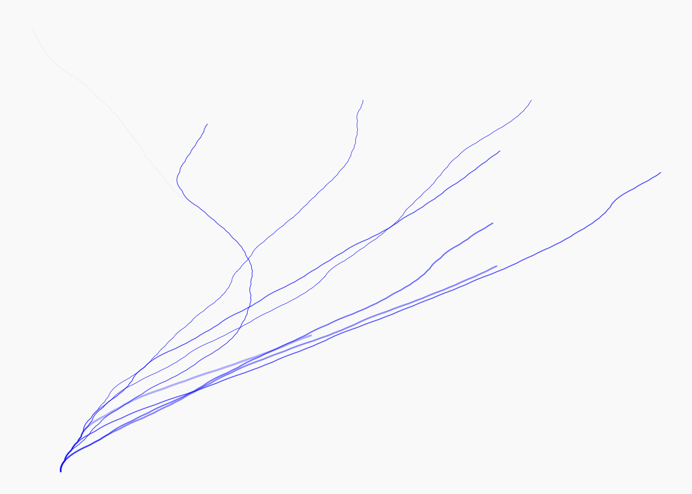
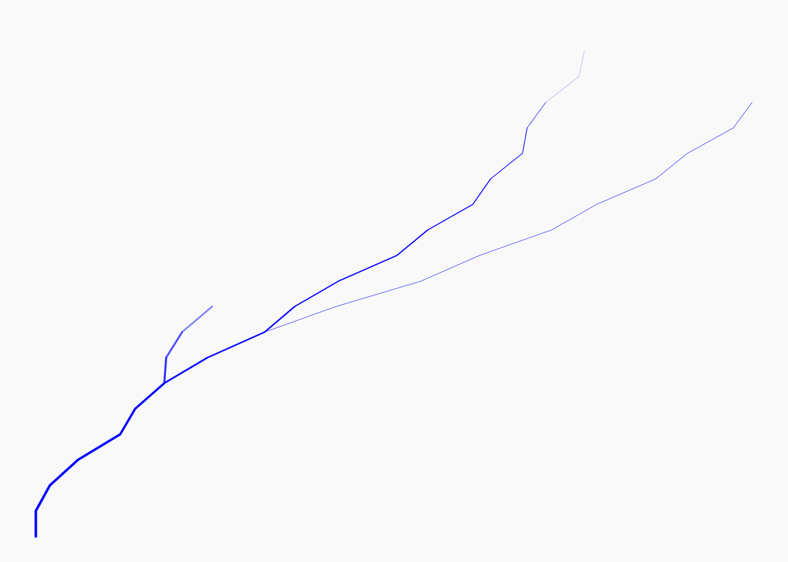

install.packages("aRtsy")Homework 2
Packages
Question-1
The install.packages() downloads a package from CRAN and saves it on your computer. This only needs to be done once per computer or again when you want to update the package.
The library() loads a package that you already installed into your current R session so you can use its functions. This has to be done every time you start a new R session and it needs to be in the qmd file so it can find the functions when it renders.
Question-2
library(aRtsy)The Collatz conjecture is a famous unsolved problem in mathematics. It starts with any positive integer. If the number is even, divide it by 2. If the number is odd, multiply it by 3 and add 1. Then repeat the process with the new number. The conjecture states that no matter which positive integer you start with, you will eventually reach 1. No one has been able to prove that it is true for all positive integers.
The equation: the next term in the sequence is \(n_{k+1} = n_k / 2\) when \(n_k\) is even, and \(n_{k+1} = 3n_k + 1\) when \(n_k\) is odd.
Question-3
a.
set.seed(4)
canvas_collatz(
colors = c("blue"),
n = 10
)
The function canvas_collatz() draws a piece of generative art based on the Collatz conjecture. It randomly chooses n=10 starting integers, runs the Collatz sequence for each one, and draws each sequence as a line that bends a little at every step. The lines are colored using the color(s) in the colors = c(“blue”).
b.
In n=10, the function randomly picks 10 starting numbers each time it runs. Random number generators in R produce a different set of values on every run, so the starting numbers change each time.
Every time the document is rendered the code runs again, so the figure changes. That means the figure in the rendered document might not match what was described or interpreted in text, and the results are not reproducible.
The help file says that set.seed() sets the starting point “seed” of the random number generator. Random numbers in R are generated by an algorithm and it produces the exact same sequence of “random” numbers. Calling set.seed() with the same number right before the random code ends up giving the same result every time due to that. It needs to be set before the code that uses randomness which should ideally be in the same chunk.
Question-4
canvas_collatz(
colors = c("blue"),
n = 1:20
)
In Question 3 , n=10 is a single number which tells the function to randomly select 10 starting values. In this, n=1:20 is a vector, so we are telling the function to use the starting values 1 through 20. This results in a drawing based on 20 sequences. The plot will be identical every time the code is run.
It is not necessary as set.seed() only matters when code is random, and the starting values in this is fully specified by 1-20, so the output is reproducible. Including set.seed(1) would not do anything to it while not changing the results either.